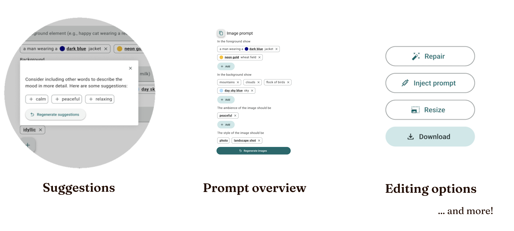
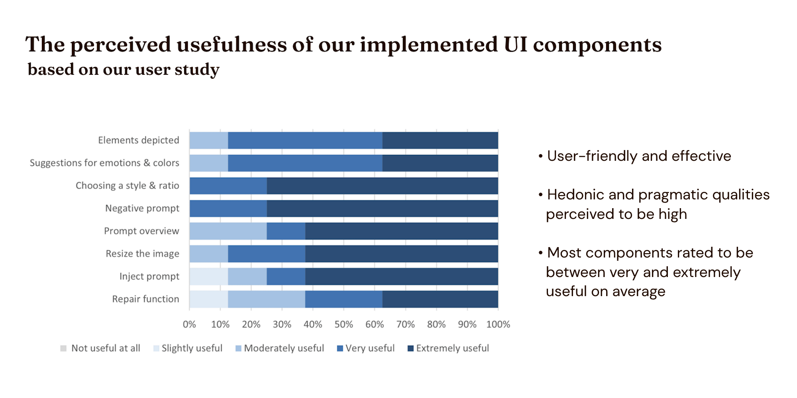
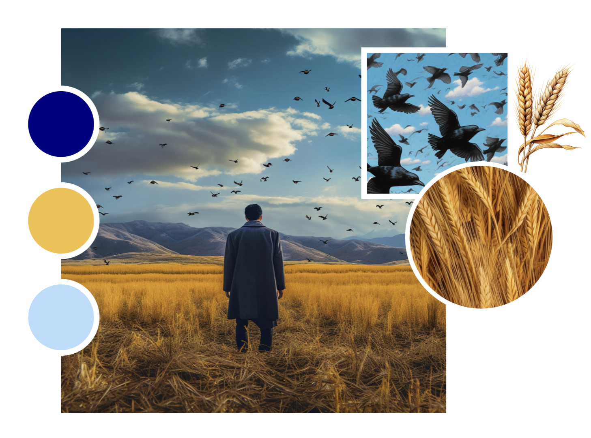
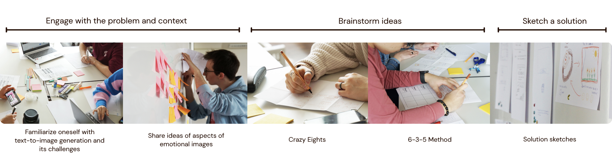
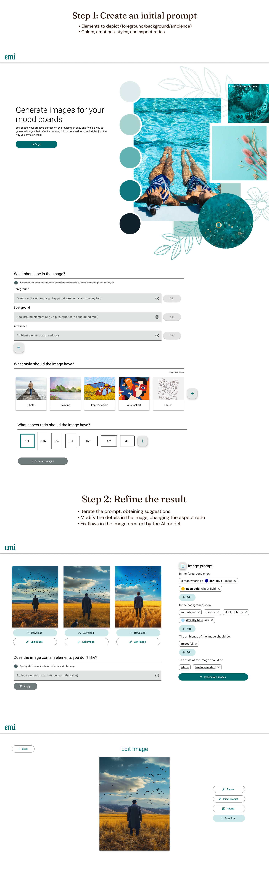
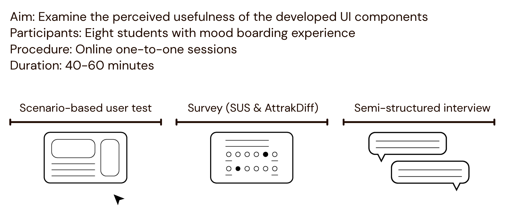
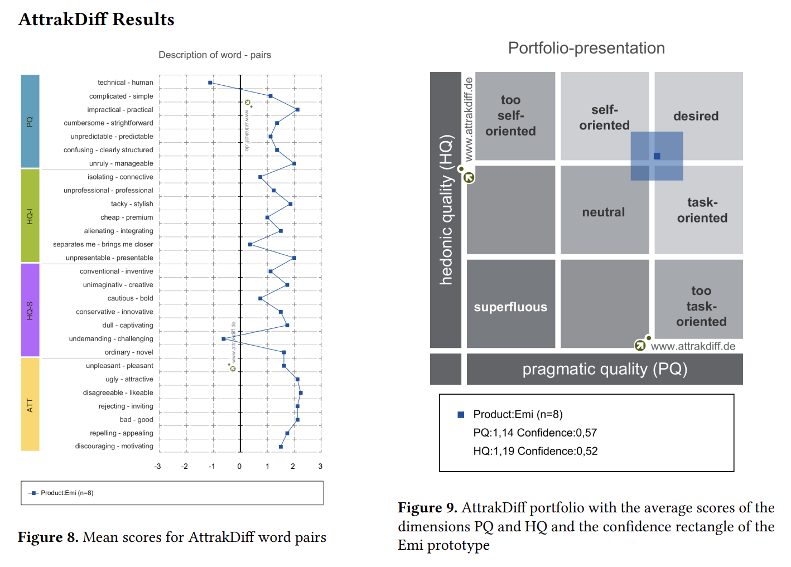

In the spring of 2023, I took the course HCI Research Project in my master's program.
Together with Eva-Maria Strumegger and Luzie Schroeter, we examined HCI-related scientific literature,
formulated a meaningful research question, conducted research through a workshop, developed a prototype based on
our findings, and then tested and analyzed this prototype. Our work culminated in a scientific research paper we
presented at an HCI conference. This paper can be viewed here.
PROBLEM
Users struggle to convey emotions through text-to-image prompts
Text-to-image generators have transformed the creative landscape by converting text
descriptions into unique visual representations. However, text as an input modality presents challenges
for users due to the need for precise instructions [1]. Conveying emotions
through text-to-image prompts
is particularly challenging [2], and research that has addressed user needs
and the usability of such
systems has been limited so far [3, 4, 5].
SOLUTION
Provide useful UI components to guide users through generating effective prompts for
emotional images


WHITE PAPER RESEARCH
A way to generate two times more usable results
As my group researched ways to facilitate the creation of effective prompts, we came
across the idea of structuring searches to produce prompts. Liu et al. [6], for
instance, developed a structured
search system called "Opal" to guide users through the generation of text-to-image prompts for news
illustrations. The results
of their study were striking:
“Users with [the structured search system] generated
two times more usable results than users without.”
In contrast to Liu et al., we investigated the usefulness of different UI components that
may be used for producing or editing text-generated images, and we were interested in emotionally rich images
for mood boards rather than news illustrations.
OUR RESEARCH QUESTION
Produce novel research
After conducting research on related work, we proposed the following research question to
guide us:
“What UI components might be useful for a structured search
to generate emotional imagery for creative mood boarding using text-to-image generators?”

We had decided to focus on mood boards because they are a visual medium especially focused
on communicating emotions [7, 8, 9], and there was a lack of research in this area.
CO-DESIGN WORKSHOP
Gather ideas on such UI components
In order to address our research question, we conducted a co-design workshop to gather
ideas on useful UI components. Our participants were Human-Computer Interaction students with previous
experience in creating mood boards and using AI image generator tools. Inspired by Design Thinking
methodology [10], our workshop was divided into the following phases:

The following themes emerged from our thematic analysis of participants' input:
1. Context and depicted elements are the basis of emotional images
2. Ambience contributes to images being perceived as emotional
3. Colors convey emotions
4. Objects or subjects that express feelings make an image emotional
5. An emotional image tells a story
6. Personal experiences influence how we perceive emotional images
PROTOTYPE DESIGN
Prototype
Our scenario-based clickable prototype, called "Emi," was based on the insights gained from the co-design workshop
as well as the design guidelines for prompt engineering for generative text-to-image models developed by Liu and
Chilton. It was divided into the following two steps:

We conducted a three-stage user test to investigate the usability as well as the hedonic
and pragmatic qualities of the user experience when using the Emi prototype. Moreover, we examined the
perceived usefulness of each UI component when it comes to creating emotional images.

Our evaluation shows that Emi is user-friendly and effective in guiding
the creation of emotional images for mood boards, and its hedonic and pragmatic qualities are
perceived to be high. Emi received a System Usability Scale (SUS) score of 75.94, an AttrakDiff
score of 1.14 for pragmatic quality, and an AttrakDiff average score of 1.19 for hedonic quality.

CONCLUSION & LESSONS
Lessons learned
I am immensely grateful for having had the opportunity to work on such an interesting, exciting research
project with Eva-Maria and Luzie that not only deepened my understanding of human-computer interaction but
also shaped my approach to design and problem-solving. Reflecting on this, I learned a few valuable lessons:
1. Thorough research early on is essential. As generative AI had become a hot topic for
research, our group had to be well-informed of potential directions of development within this field to avoid
accidentally replicating the aims of prior research or new research that may emerge during the course of our
project. Some of our initial research questions had already been addressed by prior research, and we
fine-tuned our research questions until they were meaningfully novel by comparing existing work, drawing
inspiration from “future work” sections in other papers, and narrowing down our focus.
2. Pilot tests should not be overlooked. For our workshops and user tests, we had to present
information to users that sometimes may have seemed clear to us but not to them. We found it helpful to
continuously receive feedback from each other and others to ensure that users would understand us before
presenting information to them.
3. Organization pays off. Our project was documented with the collaborative software tool Miro, and clearly sectioning
different parts of the project throughout a timeline for such a huge project greatly facilitated our workflow.
REFERENCES
[1] Vivian Liu and Lydia B Chilton. 2022. Design Guidelines for Prompt Engineering Text-to-Image
Generative Models. In Proceedings of the 2022 CHI Conference on Human Factors in Computing Systems
(New Orleans, LA, USA) (CHI ’22). Association for Computing Machinery, New York, NY, USA, Article
384, 23 pages. https://doi.org/10.1145/3491102.3501825
[2] Yunlong Wang, Shuyuan Shen, and Brian Y. Lim. 2023. RePrompt: Automatic Prompt Editing to Refine
AI-Generative Art Towards Precise Expressions. In Proceedings of the 2023 CHI Conference on Human
Factors in Computing Systems, Albrecht Schmidt, Kaisa Väänänen, Tesh Goyal, Per Ola Kristensson,
Anicia Peters, Stefanie Mueller, Julie R. Williamson, and Max L. Wilson (Eds.). ACM, New York, NY, USA,
1–29. https://doi.org/10.1145/3544548.3581402
[3] Yutong Xie, Zhaoying Pan, Jinge Ma, Luo Jie, and Qiaozhu Mei. 2023. A Prompt Log Analysis of
Text-to-Image
Generation Systems. In Proceedings of the ACM Web Conference 2023, Ying Ding, Jie Tang, Juan
Sequeda, Lora
Aroyo, Carlos Castillo, and Geert-Jan Houben (Eds.). ACM, New York, NY, USA, 3892–3902.
https://doi.org/10.1145/3543507.3587430
[4] Michael Muller, Lydia B. Chilton, Anna Kantosalo, Charles Patrick Martin, and Greg Walsh. 2022.
GenAICHI: Generative AI and HCI. In CHI Conference on Human Factors in Computing Systems Extended
Abstracts, Simone
Barbosa, Cliff Lampe, Caroline Appert, and David A. Shamma (Eds.). ACM, New York, NY, USA, 1–7.
https://doi.org/10. 1145/3491101.3503719
[5] Han Qiao, Vivian Liu, and Lydia Chilton. 2022. Initial Images: Using Image Prompts to Improve Subject
Representation in Multimodal AI Generated Art. In Creativity and Cognition. ACM, New York, NY, USA,
15–28.
https://doi.org/10.1145/3527927.3532792
[6] Vivian Liu, Han Qiao, and Lydia Chilton. 2022. Opal: Multimodal Image Generation for News Illustration.
In Proceedings of the 35th Annual ACM Symposium on User Interface Software and Technology (Bend,
OR, USA)
(UIST ’22). Association for Computing Machinery, New York, NY, USA, Article 73, 17 pages.
https://doi.org/10.1145/3526113.3545621
[7] T. D. Cassidy. 2008. Mood boards: Current practice in learning and teaching strategies and students’
understanding of the process. International Journal of Fashion Design, Technology and Education 1,
1
(2008), 43–54. https://doi.org/10.1080/17543260802015154
[8] Huang-Ming Chang, Marta Boladeras, Andreu Català, Wei Chen, and Matthias Rauterberg. 2014. Mood Boards
as a Universal Tool for Investigating Emotional Experience. https://doi.org/10.1007/978-3-319-07638-6_22
[9] Steve Garner and Deana McDonagh-Philp. 2001. Problem Interpretation and Resolution via Visual Stimuli:
The Use of ‘Mood Boards’ in Design Education. Journal of Art & Design Education 20, 1 (2001),
57–64.
https://doi.org/10.1111/1468-5949.00250
[10] Annu Sible Prabhakar. 2021. Design Thinking For Technology Design. In Proceedings of the 22nd
Annual
Conference on Information Technology Education (SnowBird, UT, USA) (SIGITE ’21). Association
for
Computing Machinery, New York, NY, USA, 153–154. https: //doi.org/10.1145/3450329.3476873